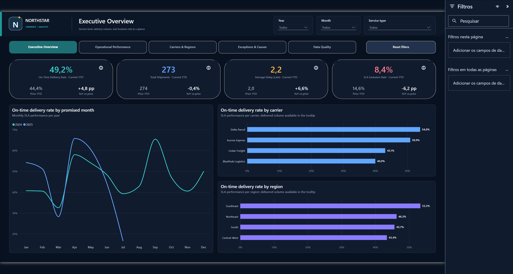

Published · CI passing
Operations Analytics Platform
A fictional e-commerce control tower for delivery SLAs, carrier and regional performance, cycle time, freight exposure, exceptions, and governed data quality.
47.38% on time across 667 SLA-eligible shipments, with invalid records preserved for audit but excluded from the governed denominator.